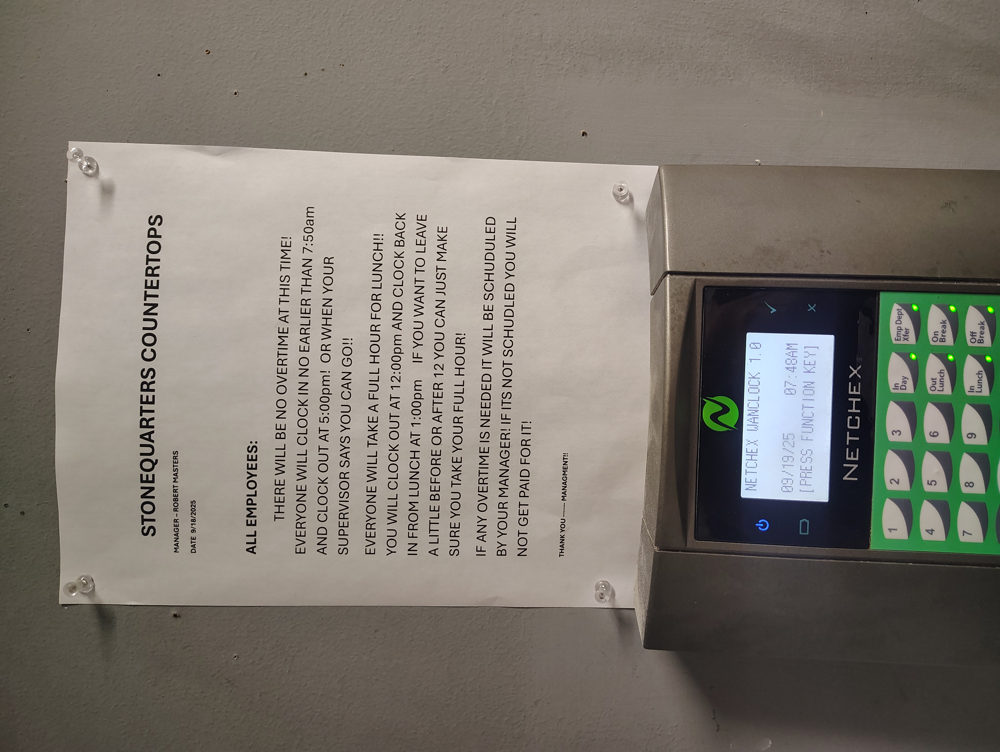
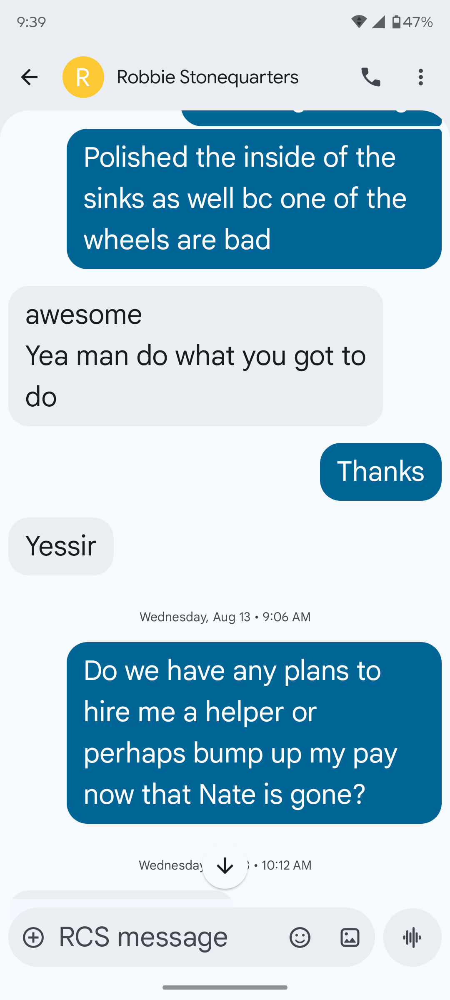
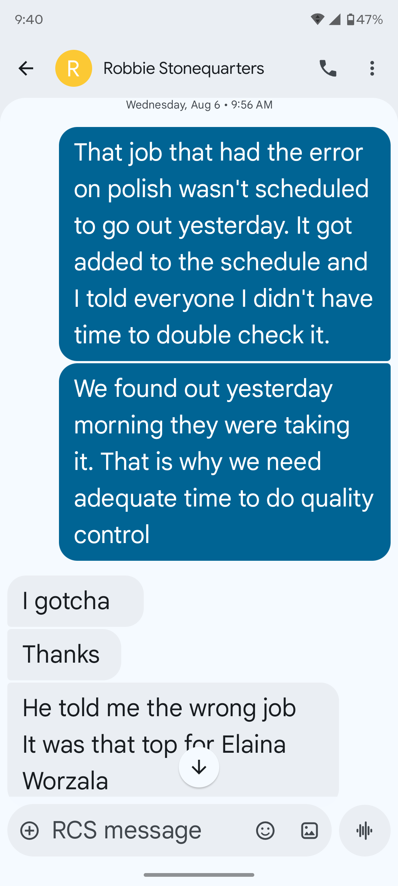
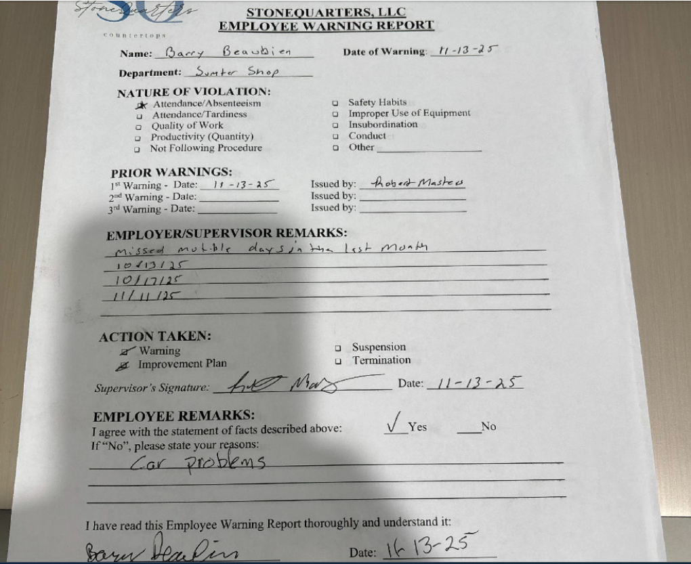
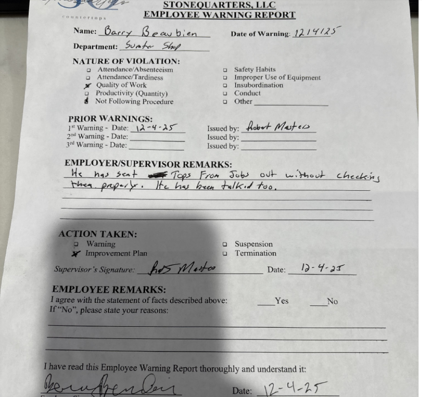
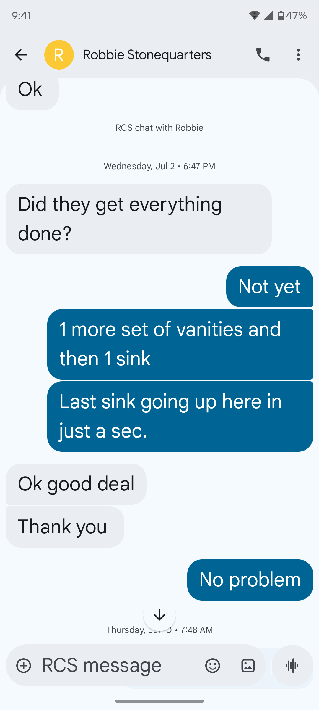

Annotated Evidence List
This page details the physical and digital evidence supporting the claim of "Inability due to Employer
Negligence" and "Retaliation."
EXHIBIT A: Overtime Ban Notice

Legal Relevance: Proves the employer removed the ability to finish work. As the last
person in the line, receiving work late meant you *had* to leave it unfinished to comply with this rule.
EXHIBIT B: Request for Helper (Ignored)

Legal Relevance: Proves you proactively communicated the need for resources. The
employer failed to provide them, creating the "inefficiency."
EXHIBIT C: Quality Risk Warning (Proactive)

Legal Relevance: Proves management knew quality was at risk due to scheduling issues
*months* before firing you. It wasn't "negligence," it was a known systemic issue accepted by Robbie ("I
gotcha").
EXHIBIT D: First Write-up (Retaliation Trigger)

Legal Relevance: This date coincides with when they learned you were moving. Prior to
this, your attendance (within the 10-day allowance, used less than half) was not an issue. PROVES
RETALIATION.
EXHIBIT E: Quality Write-up (No Tool Provided)

Legal Relevance: This write-up was for "Work Performance" due to lack of
time, not negligence. An entire cart of tops (a full day's worth of work) was pushed to my
area at 4:00 PM the previous day. I explicitly told Robbie and Shop Manager Andrew Bazil that I did not
have enough time to finish. Robbie verbally said "that's fine," yet wrote me up the next day. Andrew
Bazil can testify that completing this volume in the remaining hour was physically impossible.
EXHIBIT F: Incoming Workflow Condition

Legal Relevance: Shows the "trashy" state of work arriving at your station. Without a
helper or overtime, fixing this volume was physically impossible.